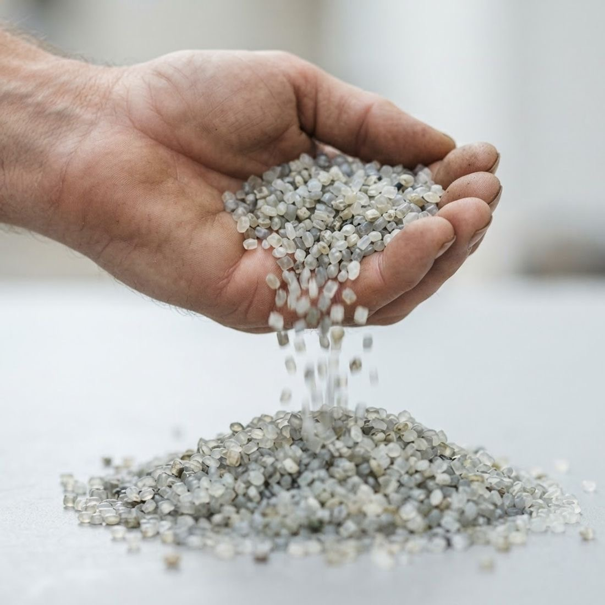

Вторичные гранулы
Переработанное полимерное сырьё: ПЭНД, ПЭВД и ПП. Делаем гранулы из обрезков и брака своего производства и из принятого вторсырья.
- Полимеры
- ПЭНД, ПЭВД, ПП
- Сырьё
- Вторсырьё
- Подготовка
- Мойка, измельчение
- Выпуск
- Гранулирование

Где применяют
- Производство полиэтиленовой плёнки
- Изделия методом экструзии и литья
- Замена части первичного сырья
- Снижение себестоимости продукции
Виды
- ПЭНД
- ПЭВД
- ПП
Как выбрать
Подскажем по телефону +7 (988) 309-02-02 или в ответ на заявку.
Какой полимер выбрать
ПЭНД, полиэтилен низкого давления, обычно берут для более жёстких изделий.
ПЭВД, полиэтилен высокого давления, мягче и эластичнее, его чаще используют для плёнок и пакетов.
ПП, полипропилен, подходит для изделий, которым нужна жёсткость и стойкость к нагреву.
Если не уверены, напишите, что вы производите и на каком оборудовании, и мы подскажем подходящий тип.
Откуда сырьё
Основа гранул — обрезки и брак нашего собственного производства плёнки, а также отходы полиэтиленовой упаковки, которые мы принимаем от производственных предприятий.
Сырьё разделяем по типам полимеров и очищаем от загрязнений перед переработкой.
Как заказать
Напишите тип полимера, нужный объём и город доставки. Ответим с ценой и сроками в течение часа в рабочее время.
Делаем сами в Каспийске
Гранулы делаем на своей линии переработки: сортируем вторсырьё, моем, измельчаем и гранулируем. Часть гранул сами пускаем в производство плёнки.


Частые вопросы
Какие гранулы вы производите?
Вторичные гранулы ПЭНД, ПЭВД и ПП.
Из чего делаются гранулы?
Из обрезков и брака нашего производства плёнки и из принятого вторсырья: отходов полиэтиленовой упаковки.
Принимаете ли вы вторсырьё?
Да, принимаем отходы пластиковой упаковки от производственных предприятий. Позвоните, чтобы обсудить объём и условия.
В какие регионы доставляете?
Чаще всего в Дагестан, Чечню, Ставропольский и Краснодарский края, Ростовскую, Волгоградскую и Астраханскую области и Калмыкию. В другие регионы России тоже доставим.
Как узнать цену?
Оставьте заявку с типом полимера и объёмом или позвоните по номеру +7 (988) 309-02-02. В рабочее время ответим с ценой в течение часа.
Посчитаем стоимость за час
Напишите толщину, ширину и объём. Ответим с ценой и сроком доставки.
Запросить цену на гранулы